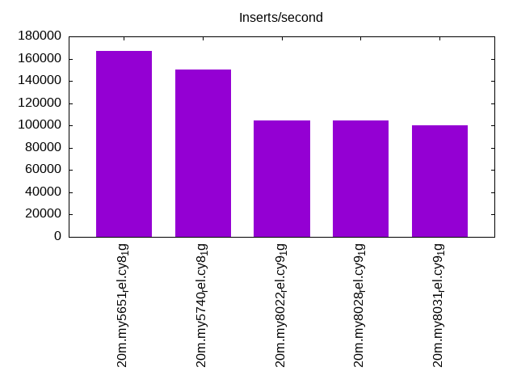
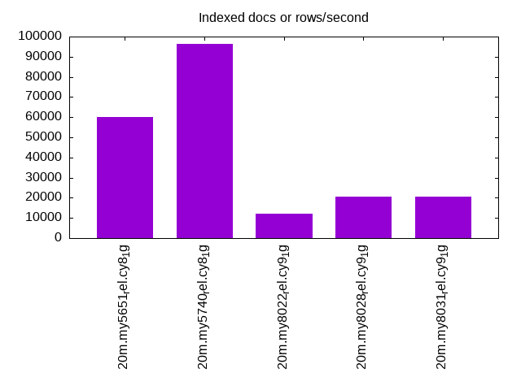
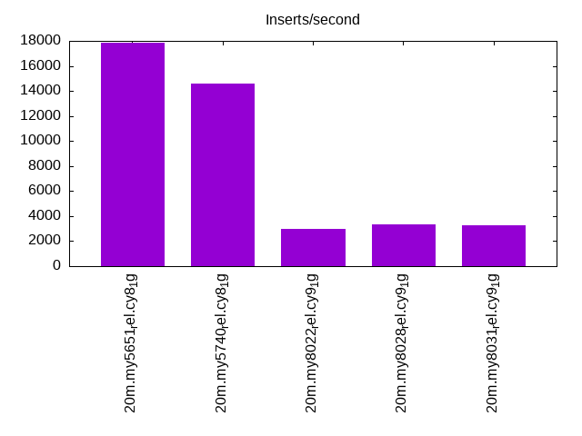
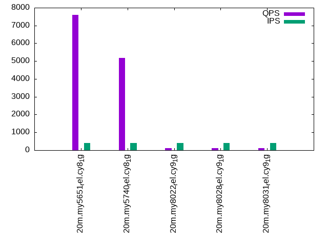
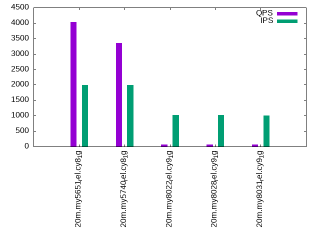
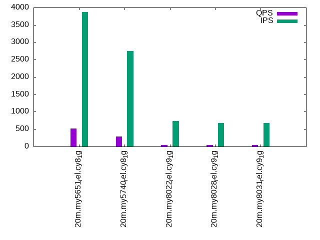

This is a report for the insert benchmark with 20M docs and 4 client(s). It is generated by scripts (bash, awk, sed) and Tufte might not be impressed. An overview of the insert benchmark is here and a short update is here. Below, by DBMS, I mean DBMS+version.config. An example is my8020.c10b40 where my means MySQL, 8020 is version 8.0.20 and c10b40 is the name for the configuration file.
The test server has 8 AMD cores, 16G RAM and an NVMe SSD. It is described here as the Beelink. The benchmark was run with 4 clients and there were 1 or 2 connections per client (1 for queries, 1 for inserts). The benchmark loads 20M rows without secondary indexes, creates secondary indexes, loads another 20M rows then does 3 read+write tests for one hour each that do queries as fast as possible with 100, 500 and then 1000 writes/second/client concurrent with the queries. There is 1 table. The database is cached by the OS page cache but not the storage engine. Clients and the DBMS share one server. The per-database configs are in the per-database subdirectories here.
The tested DBMS are:
The numbers are inserts/s for l.i0 and l.i1, indexed docs (or rows) /s for l.x and queries/s for q*.2. The values are the average rate over the entire test for inserts (IPS) and queries (QPS). The range of values for IPS and QPS is split into 3 parts: bottom 25%, middle 50%, top 25%. Values in the bottom 25% have a red background, values in the top 25% have a green background and values in the middle have no color. A gray background is used for values that can be ignored because the DBMS did not sustain the target insert rate. Red backgrounds are not used when the minimum value is within 80% of the max value.
| dbms | l.i0 | l.x | l.i1 | q100.1 | q500.1 | q1000.1 |
|---|---|---|---|---|---|---|
| 20m.my5651_rel.cy8_1g | 166667 | 60180 | 17825 | 7602 | 4032 | 515 |
| 20m.my5740_rel.cy8_1g | 150376 | 96172 | 14556 | 5176 | 3353 | 289 |
| 20m.my8022_rel.cy9_1g | 104712 | 11986 | 2982 | 105 | 71 | 45 |
| 20m.my8028_rel.cy9_1g | 104712 | 20427 | 3324 | 114 | 71 | 46 |
| 20m.my8031_rel.cy9_1g | 100000 | 20489 | 3254 | 117 | 68 | 44 |
This table has relative throughput, throughput for the DBMS relative to the DBMS in the first line, using the absolute throughput from the previous table.
| dbms | l.i0 | l.x | l.i1 | q100.1 | q500.1 | q1000.1 |
|---|---|---|---|---|---|---|
| 20m.my5651_rel.cy8_1g | 1.00 | 1.00 | 1.00 | 1.00 | 1.00 | 1.00 |
| 20m.my5740_rel.cy8_1g | 0.90 | 1.60 | 0.82 | 0.68 | 0.83 | 0.56 |
| 20m.my8022_rel.cy9_1g | 0.63 | 0.20 | 0.17 | 0.01 | 0.02 | 0.09 |
| 20m.my8028_rel.cy9_1g | 0.63 | 0.34 | 0.19 | 0.01 | 0.02 | 0.09 |
| 20m.my8031_rel.cy9_1g | 0.60 | 0.34 | 0.18 | 0.02 | 0.02 | 0.09 |
This lists the average rate of inserts/s for the tests that do inserts concurrent with queries. For such tests the query rate is listed in the table above. The read+write tests are setup so that the insert rate should match the target rate every second. Cells that are not at least 95% of the target have a red background to indicate a failure to satisfy the target.
| dbms | q100.1 | q500.1 | q1000.1 |
|---|---|---|---|
| my5651_rel.cy8_1g | 399 | 1994 | 3865 |
| my5740_rel.cy8_1g | 399 | 1994 | 2750 |
| my8022_rel.cy9_1g | 399 | 1017 | 738 |
| my8028_rel.cy9_1g | 399 | 1017 | 681 |
| my8031_rel.cy9_1g | 399 | 998 | 675 |
| target | 400 | 2000 | 4000 |
l.i0: load without secondary indexes. Graphs for performance per 1-second interval are here.
Average throughput:
Insert response time histogram: each cell has the percentage of responses that take <= the time in the header and max is the max response time in seconds. For the max column values in the top 25% of the range have a red background and in the bottom 25% of the range have a green background. The red background is not used when the min value is within 80% of the max value.
| dbms | 256us | 1ms | 4ms | 16ms | 64ms | 256ms | 1s | 4s | 16s | gt | max |
|---|---|---|---|---|---|---|---|---|---|---|---|
| my5651_rel.cy8_1g | 5.399 | 91.320 | 3.022 | 0.246 | 0.013 | 0.106 | |||||
| my5740_rel.cy8_1g | 0.252 | 95.237 | 3.583 | 0.910 | 0.017 | 0.116 | |||||
| my8022_rel.cy9_1g | 95.183 | 2.427 | 2.184 | 0.205 | 0.161 | ||||||
| my8028_rel.cy9_1g | 93.737 | 4.054 | 2.050 | 0.159 | 0.185 | ||||||
| my8031_rel.cy9_1g | 91.709 | 6.193 | 1.991 | 0.107 | 0.203 |
Performance metrics for the DBMS listed above. Some are normalized by throughput, others are not. Legend for results is here.
ips qps rps rmbps wps wmbps rpq rkbpq wpi wkbpi csps cpups cspq cpupq dbgb1 dbgb2 rss maxop p50 p99 tag 166667 0 1354 5.3 209.1 75.8 0.008 0.032 0.001 0.466 19953 56.9 0.120 27 2.5 43.0 1.0 0.106 43853 12087 20m.my5651_rel.cy8_1g 150376 0 0 0.0 218.2 66.8 0.000 0.000 0.001 0.455 15699 56.0 0.104 30 2.4 42.9 1.2 0.116 40156 25980 20m.my5740_rel.cy8_1g 104712 0 0 0.0 523.9 48.3 0.000 0.000 0.005 0.472 12747 49.1 0.122 38 2.4 10.9 1.3 0.161 28468 7389 20m.my8022_rel.cy9_1g 104712 0 0 0.0 515.0 47.5 0.000 0.000 0.005 0.465 13111 48.4 0.125 37 2.4 10.9 1.4 0.185 28568 4295 20m.my8028_rel.cy9_1g 100000 0 0 0.0 509.9 46.3 0.000 0.000 0.005 0.474 12780 49.2 0.128 39 2.4 11.0 1.4 0.203 27281 13895 20m.my8031_rel.cy9_1g
l.x: create secondary indexes.
Average throughput:
Performance metrics for the DBMS listed above. Some are normalized by throughput, others are not. Legend for results is here.
ips qps rps rmbps wps wmbps rpq rkbpq wpi wkbpi csps cpups cspq cpupq dbgb1 dbgb2 rss maxop p50 p99 tag 60180 0 22 0.1 343.0 60.9 0.000 0.001 0.006 1.036 2025 7.2 0.034 10 3.9 44.4 1.1 0.012 NA NA 20m.my5651_rel.cy8_1g 96172 0 0 0.0 335.5 87.5 0.000 0.000 0.003 0.932 4878 9.2 0.051 8 4.0 44.5 1.3 0.021 NA NA 20m.my5740_rel.cy8_1g 11986 0 0 0.0 309.9 10.8 0.000 0.000 0.026 0.922 2299 1.4 0.192 9 4.0 12.6 1.5 0.078 NA NA 20m.my8022_rel.cy9_1g 20427 0 106 7.1 566.7 23.2 0.005 0.355 0.028 1.163 4270 7.1 0.209 28 4.0 12.6 1.5 0.054 NA NA 20m.my8028_rel.cy9_1g 20489 0 106 7.1 564.9 23.1 0.005 0.354 0.028 1.152 4452 7.8 0.217 30 4.0 12.6 1.5 0.017 NA NA 20m.my8031_rel.cy9_1g
l.i1: continue load after secondary indexes created. Graphs for performance per 1-second interval are here.
Average throughput:
Insert response time histogram: each cell has the percentage of responses that take <= the time in the header and max is the max response time in seconds. For the max column values in the top 25% of the range have a red background and in the bottom 25% of the range have a green background. The red background is not used when the min value is within 80% of the max value.
| dbms | 256us | 1ms | 4ms | 16ms | 64ms | 256ms | 1s | 4s | 16s | gt | max |
|---|---|---|---|---|---|---|---|---|---|---|---|
| my5651_rel.cy8_1g | 2.620 | 83.451 | 13.202 | 0.653 | 0.074 | 0.916 | |||||
| my5740_rel.cy8_1g | 0.937 | 73.127 | 25.139 | 0.713 | 0.080 | 0.004 | 1.221 | ||||
| my8022_rel.cy9_1g | 0.120 | 28.754 | 37.953 | 30.336 | 2.638 | 0.166 | 0.034 | 9.802 | |||
| my8028_rel.cy9_1g | 0.067 | 23.566 | 44.660 | 30.607 | 0.927 | 0.144 | 0.028 | 6.820 | |||
| my8031_rel.cy9_1g | 0.004 | 21.808 | 46.379 | 30.457 | 1.155 | 0.173 | 0.023 | 8.779 |
Performance metrics for the DBMS listed above. Some are normalized by throughput, others are not. Legend for results is here.
ips qps rps rmbps wps wmbps rpq rkbpq wpi wkbpi csps cpups cspq cpupq dbgb1 dbgb2 rss maxop p50 p99 tag 17825 0 286 1.1 3075.5 125.3 0.016 0.064 0.173 7.199 12933 38.2 0.726 171 10.5 51.0 1.1 0.916 4697 150 20m.my5651_rel.cy8_1g 14556 0 0 0.0 2707.9 104.9 0.000 0.000 0.186 7.381 10341 38.3 0.710 210 10.4 50.9 1.3 1.221 3796 150 20m.my5740_rel.cy8_1g 2982 0 0 0.0 935.0 20.4 0.000 0.002 0.314 7.013 8937 11.0 2.997 295 10.4 19.0 1.5 9.802 550 0 20m.my8022_rel.cy9_1g 3324 0 0 0.0 999.1 21.8 0.000 0.002 0.301 6.700 6527 13.0 1.963 313 10.4 19.0 1.5 6.820 699 0 20m.my8028_rel.cy9_1g 3254 0 0 0.0 995.7 22.4 0.000 0.002 0.306 7.049 6629 13.9 2.038 342 10.5 19.0 1.5 8.779 699 0 20m.my8031_rel.cy9_1g
q100.1: range queries with 100 insert/s per client. Graphs for performance per 1-second interval are here.
Average throughput:
Query response time histogram: each cell has the percentage of responses that take <= the time in the header and max is the max response time in seconds. For max values in the top 25% of the range have a red background and in the bottom 25% of the range have a green background. The red background is not used when the min value is within 80% of the max value.
| dbms | 256us | 1ms | 4ms | 16ms | 64ms | 256ms | 1s | 4s | 16s | gt | max |
|---|---|---|---|---|---|---|---|---|---|---|---|
| my5651_rel.cy8_1g | 22.359 | 75.984 | 0.409 | 1.011 | 0.231 | 0.006 | nonzero | 0.367 | |||
| my5740_rel.cy8_1g | 15.514 | 82.074 | 0.236 | 1.653 | 0.426 | 0.096 | 0.001 | 0.765 | |||
| my8022_rel.cy9_1g | 0.026 | 26.328 | 2.719 | 21.601 | 33.036 | 14.477 | 1.812 | 0.001 | 1.272 | ||
| my8028_rel.cy9_1g | 0.004 | 23.682 | 3.655 | 25.917 | 32.630 | 12.452 | 1.660 | 0.983 | |||
| my8031_rel.cy9_1g | 0.002 | 23.483 | 4.024 | 25.631 | 32.815 | 12.605 | 1.438 | 0.001 | 1.213 |
Insert response time histogram: each cell has the percentage of responses that take <= the time in the header and max is the max response time in seconds. For max values in the top 25% of the range have a red background and in the bottom 25% of the range have a green background. The red background is not used when the min value is within 80% of the max value.
| dbms | 256us | 1ms | 4ms | 16ms | 64ms | 256ms | 1s | 4s | 16s | gt | max |
|---|---|---|---|---|---|---|---|---|---|---|---|
| my5651_rel.cy8_1g | 3.181 | 44.486 | 46.465 | 5.174 | 0.694 | 0.818 | |||||
| my5740_rel.cy8_1g | 23.542 | 48.194 | 12.417 | 10.479 | 5.340 | 0.028 | 1.426 | ||||
| my8022_rel.cy9_1g | 0.438 | 3.188 | 49.833 | 45.361 | 1.181 | 1.892 | |||||
| my8028_rel.cy9_1g | 0.007 | 0.139 | 2.250 | 50.319 | 45.347 | 1.938 | 1.873 | ||||
| my8031_rel.cy9_1g | 0.243 | 2.278 | 51.396 | 44.340 | 1.743 | 1.825 |
Performance metrics for the DBMS listed above. Some are normalized by throughput, others are not. Legend for results is here.
ips qps rps rmbps wps wmbps rpq rkbpq wpi wkbpi csps cpups cspq cpupq dbgb1 dbgb2 rss maxop p50 p99 tag 399 7602 16 0.2 1272.8 38.0 0.002 0.022 3.192 97.661 32417 38.0 4.265 400 11.0 51.5 1.1 0.367 1966 80 20m.my5651_rel.cy8_1g 399 5176 9 0.1 1320.9 36.6 0.002 0.030 3.312 93.868 24140 28.7 4.664 444 10.8 51.4 1.3 0.765 1358 32 20m.my5740_rel.cy8_1g 399 105 8 0.1 967.9 16.1 0.081 1.357 2.427 41.304 8230 5.2 78.304 3958 10.9 19.5 1.5 1.272 16 0 20m.my8022_rel.cy9_1g 399 114 9 0.2 1006.4 16.7 0.082 1.365 2.524 42.961 6931 5.7 60.746 3997 10.9 19.5 1.5 0.983 16 0 20m.my8028_rel.cy9_1g 399 117 12 0.2 1016.1 17.1 0.101 1.648 2.549 43.842 7167 6.1 61.361 4178 10.9 19.5 1.5 1.213 16 0 20m.my8031_rel.cy9_1g
q500.1: range queries with 500 insert/s per client. Graphs for performance per 1-second interval are here.
Average throughput:
Query response time histogram: each cell has the percentage of responses that take <= the time in the header and max is the max response time in seconds. For max values in the top 25% of the range have a red background and in the bottom 25% of the range have a green background. The red background is not used when the min value is within 80% of the max value.
| dbms | 256us | 1ms | 4ms | 16ms | 64ms | 256ms | 1s | 4s | 16s | gt | max |
|---|---|---|---|---|---|---|---|---|---|---|---|
| my5651_rel.cy8_1g | 8.784 | 83.324 | 2.549 | 4.969 | 0.374 | 0.054 | |||||
| my5740_rel.cy8_1g | 5.486 | 87.228 | 1.627 | 4.961 | 0.606 | 0.092 | nonzero | 0.304 | |||
| my8022_rel.cy9_1g | 0.013 | 21.532 | 4.540 | 15.348 | 32.011 | 22.527 | 4.026 | 0.002 | 1.809 | ||
| my8028_rel.cy9_1g | 0.005 | 17.435 | 3.187 | 19.673 | 33.961 | 21.781 | 3.955 | 0.003 | 1.387 | ||
| my8031_rel.cy9_1g | 0.001 | 16.680 | 3.573 | 18.602 | 33.552 | 23.455 | 4.132 | 0.005 | 1.617 |
Insert response time histogram: each cell has the percentage of responses that take <= the time in the header and max is the max response time in seconds. For max values in the top 25% of the range have a red background and in the bottom 25% of the range have a green background. The red background is not used when the min value is within 80% of the max value.
| dbms | 256us | 1ms | 4ms | 16ms | 64ms | 256ms | 1s | 4s | 16s | gt | max |
|---|---|---|---|---|---|---|---|---|---|---|---|
| my5651_rel.cy8_1g | 2.992 | 69.412 | 27.492 | 0.104 | 0.098 | ||||||
| my5740_rel.cy8_1g | 1.800 | 67.033 | 28.062 | 3.086 | 0.018 | 0.358 | |||||
| my8022_rel.cy9_1g | 0.007 | 3.212 | 9.150 | 62.864 | 24.696 | 0.071 | 1.542 | ||||
| my8028_rel.cy9_1g | 0.004 | 1.733 | 8.936 | 65.165 | 24.062 | 0.099 | 1.616 | ||||
| my8031_rel.cy9_1g | 1.807 | 8.549 | 64.833 | 24.643 | 0.168 | 1.538 |
Performance metrics for the DBMS listed above. Some are normalized by throughput, others are not. Legend for results is here.
ips qps rps rmbps wps wmbps rpq rkbpq wpi wkbpi csps cpups cspq cpupq dbgb1 dbgb2 rss maxop p50 p99 tag 1994 4032 70 0.8 3910.1 119.4 0.017 0.195 1.961 61.325 25814 32.1 6.402 637 12.0 52.5 1.1 0.054 991 815 20m.my5651_rel.cy8_1g 1994 3353 40 0.7 3809.2 114.5 0.012 0.208 1.910 58.806 23581 27.7 7.032 661 11.9 52.4 1.3 0.304 847 447 20m.my5740_rel.cy8_1g 1017 71 8 0.1 989.4 17.1 0.107 1.774 0.973 17.206 8319 6.4 117.002 7201 12.0 20.5 1.5 1.809 16 0 20m.my8022_rel.cy9_1g 1017 71 8 0.1 1006.0 17.1 0.106 1.744 0.989 17.242 6925 6.9 97.258 7753 12.0 20.6 1.5 1.387 16 0 20m.my8028_rel.cy9_1g 998 68 8 0.1 977.1 16.9 0.115 1.947 0.979 17.315 6915 7.3 101.846 8601 12.0 20.6 1.5 1.617 16 0 20m.my8031_rel.cy9_1g
q1000.1: range queries with 1000 insert/s per client. Graphs for performance per 1-second interval are here.
Average throughput:
Query response time histogram: each cell has the percentage of responses that take <= the time in the header and max is the max response time in seconds. For max values in the top 25% of the range have a red background and in the bottom 25% of the range have a green background. The red background is not used when the min value is within 80% of the max value.
| dbms | 256us | 1ms | 4ms | 16ms | 64ms | 256ms | 1s | 4s | 16s | gt | max |
|---|---|---|---|---|---|---|---|---|---|---|---|
| my5651_rel.cy8_1g | 5.055 | 50.512 | 25.216 | 8.930 | 6.617 | 3.648 | 0.022 | 0.587 | |||
| my5740_rel.cy8_1g | 1.586 | 62.575 | 15.196 | 6.782 | 6.933 | 6.266 | 0.662 | nonzero | 1.236 | ||
| my8022_rel.cy9_1g | 0.013 | 21.803 | 4.867 | 8.874 | 25.768 | 28.185 | 10.458 | 0.033 | 1.999 | ||
| my8028_rel.cy9_1g | 0.002 | 16.672 | 2.383 | 12.757 | 31.724 | 26.656 | 9.747 | 0.060 | 1.814 | ||
| my8031_rel.cy9_1g | 0.001 | 16.193 | 2.776 | 12.150 | 30.744 | 28.022 | 10.042 | 0.071 | 2.167 |
Insert response time histogram: each cell has the percentage of responses that take <= the time in the header and max is the max response time in seconds. For max values in the top 25% of the range have a red background and in the bottom 25% of the range have a green background. The red background is not used when the min value is within 80% of the max value.
| dbms | 256us | 1ms | 4ms | 16ms | 64ms | 256ms | 1s | 4s | 16s | gt | max |
|---|---|---|---|---|---|---|---|---|---|---|---|
| my5651_rel.cy8_1g | 1.959 | 46.322 | 31.585 | 19.590 | 0.543 | 0.597 | |||||
| my5740_rel.cy8_1g | 0.028 | 33.881 | 34.898 | 25.641 | 5.532 | 0.019 | 1.678 | ||||
| my8022_rel.cy9_1g | 0.002 | 4.201 | 5.972 | 46.533 | 42.635 | 0.658 | 1.898 | ||||
| my8028_rel.cy9_1g | 0.003 | 1.944 | 3.789 | 51.136 | 41.592 | 1.536 | 2.723 | ||||
| my8031_rel.cy9_1g | 2.006 | 3.700 | 50.059 | 42.707 | 1.528 | 2.661 |
Performance metrics for the DBMS listed above. Some are normalized by throughput, others are not. Legend for results is here.
ips qps rps rmbps wps wmbps rpq rkbpq wpi wkbpi csps cpups cspq cpupq dbgb1 dbgb2 rss maxop p50 p99 tag 3865 515 100 0.9 2839.3 86.0 0.193 1.777 0.735 22.778 11694 15.4 22.694 2391 13.7 54.2 1.1 0.587 96 16 20m.my5651_rel.cy8_1g 2750 289 30 0.6 1896.1 55.1 0.104 1.993 0.689 20.523 8296 11.2 28.736 3104 13.6 54.1 1.2 1.236 64 0 20m.my5740_rel.cy8_1g 738 45 4 0.1 712.8 12.1 0.087 1.517 0.966 16.798 6157 4.6 137.733 8233 13.7 22.2 1.5 1.999 16 0 20m.my8022_rel.cy9_1g 681 46 4 0.1 695.9 11.8 0.092 1.624 1.021 17.668 4954 5.0 108.160 8734 13.7 22.3 1.4 1.814 16 0 20m.my8028_rel.cy9_1g 675 44 5 0.1 683.4 11.7 0.106 1.918 1.012 17.776 5049 5.2 113.982 9390 13.7 22.3 1.3 2.167 16 0 20m.my8031_rel.cy9_1g
l.i0: load without secondary indexes
Performance metrics for all DBMS, not just the ones listed above. Some are normalized by throughput, others are not. Legend for results is here.
ips qps rps rmbps wps wmbps rpq rkbpq wpi wkbpi csps cpups cspq cpupq dbgb1 dbgb2 rss maxop p50 p99 tag 166667 0 1354 5.3 209.1 75.8 0.008 0.032 0.001 0.466 19953 56.9 0.120 27 2.5 43.0 1.0 0.106 43853 12087 20m.my5651_rel.cy8_1g 150376 0 0 0.0 218.2 66.8 0.000 0.000 0.001 0.455 15699 56.0 0.104 30 2.4 42.9 1.2 0.116 40156 25980 20m.my5740_rel.cy8_1g 104712 0 0 0.0 523.9 48.3 0.000 0.000 0.005 0.472 12747 49.1 0.122 38 2.4 10.9 1.3 0.161 28468 7389 20m.my8022_rel.cy9_1g 104712 0 0 0.0 515.0 47.5 0.000 0.000 0.005 0.465 13111 48.4 0.125 37 2.4 10.9 1.4 0.185 28568 4295 20m.my8028_rel.cy9_1g 100000 0 0 0.0 509.9 46.3 0.000 0.000 0.005 0.474 12780 49.2 0.128 39 2.4 11.0 1.4 0.203 27281 13895 20m.my8031_rel.cy9_1g
l.x: create secondary indexes
Performance metrics for all DBMS, not just the ones listed above. Some are normalized by throughput, others are not. Legend for results is here.
ips qps rps rmbps wps wmbps rpq rkbpq wpi wkbpi csps cpups cspq cpupq dbgb1 dbgb2 rss maxop p50 p99 tag 60180 0 22 0.1 343.0 60.9 0.000 0.001 0.006 1.036 2025 7.2 0.034 10 3.9 44.4 1.1 0.012 NA NA 20m.my5651_rel.cy8_1g 96172 0 0 0.0 335.5 87.5 0.000 0.000 0.003 0.932 4878 9.2 0.051 8 4.0 44.5 1.3 0.021 NA NA 20m.my5740_rel.cy8_1g 11986 0 0 0.0 309.9 10.8 0.000 0.000 0.026 0.922 2299 1.4 0.192 9 4.0 12.6 1.5 0.078 NA NA 20m.my8022_rel.cy9_1g 20427 0 106 7.1 566.7 23.2 0.005 0.355 0.028 1.163 4270 7.1 0.209 28 4.0 12.6 1.5 0.054 NA NA 20m.my8028_rel.cy9_1g 20489 0 106 7.1 564.9 23.1 0.005 0.354 0.028 1.152 4452 7.8 0.217 30 4.0 12.6 1.5 0.017 NA NA 20m.my8031_rel.cy9_1g
l.i1: continue load after secondary indexes created
Performance metrics for all DBMS, not just the ones listed above. Some are normalized by throughput, others are not. Legend for results is here.
ips qps rps rmbps wps wmbps rpq rkbpq wpi wkbpi csps cpups cspq cpupq dbgb1 dbgb2 rss maxop p50 p99 tag 17825 0 286 1.1 3075.5 125.3 0.016 0.064 0.173 7.199 12933 38.2 0.726 171 10.5 51.0 1.1 0.916 4697 150 20m.my5651_rel.cy8_1g 14556 0 0 0.0 2707.9 104.9 0.000 0.000 0.186 7.381 10341 38.3 0.710 210 10.4 50.9 1.3 1.221 3796 150 20m.my5740_rel.cy8_1g 2982 0 0 0.0 935.0 20.4 0.000 0.002 0.314 7.013 8937 11.0 2.997 295 10.4 19.0 1.5 9.802 550 0 20m.my8022_rel.cy9_1g 3324 0 0 0.0 999.1 21.8 0.000 0.002 0.301 6.700 6527 13.0 1.963 313 10.4 19.0 1.5 6.820 699 0 20m.my8028_rel.cy9_1g 3254 0 0 0.0 995.7 22.4 0.000 0.002 0.306 7.049 6629 13.9 2.038 342 10.5 19.0 1.5 8.779 699 0 20m.my8031_rel.cy9_1g
q100.1: range queries with 100 insert/s per client
Performance metrics for all DBMS, not just the ones listed above. Some are normalized by throughput, others are not. Legend for results is here.
ips qps rps rmbps wps wmbps rpq rkbpq wpi wkbpi csps cpups cspq cpupq dbgb1 dbgb2 rss maxop p50 p99 tag 399 7602 16 0.2 1272.8 38.0 0.002 0.022 3.192 97.661 32417 38.0 4.265 400 11.0 51.5 1.1 0.367 1966 80 20m.my5651_rel.cy8_1g 399 5176 9 0.1 1320.9 36.6 0.002 0.030 3.312 93.868 24140 28.7 4.664 444 10.8 51.4 1.3 0.765 1358 32 20m.my5740_rel.cy8_1g 399 105 8 0.1 967.9 16.1 0.081 1.357 2.427 41.304 8230 5.2 78.304 3958 10.9 19.5 1.5 1.272 16 0 20m.my8022_rel.cy9_1g 399 114 9 0.2 1006.4 16.7 0.082 1.365 2.524 42.961 6931 5.7 60.746 3997 10.9 19.5 1.5 0.983 16 0 20m.my8028_rel.cy9_1g 399 117 12 0.2 1016.1 17.1 0.101 1.648 2.549 43.842 7167 6.1 61.361 4178 10.9 19.5 1.5 1.213 16 0 20m.my8031_rel.cy9_1g
q500.1: range queries with 500 insert/s per client
Performance metrics for all DBMS, not just the ones listed above. Some are normalized by throughput, others are not. Legend for results is here.
ips qps rps rmbps wps wmbps rpq rkbpq wpi wkbpi csps cpups cspq cpupq dbgb1 dbgb2 rss maxop p50 p99 tag 1994 4032 70 0.8 3910.1 119.4 0.017 0.195 1.961 61.325 25814 32.1 6.402 637 12.0 52.5 1.1 0.054 991 815 20m.my5651_rel.cy8_1g 1994 3353 40 0.7 3809.2 114.5 0.012 0.208 1.910 58.806 23581 27.7 7.032 661 11.9 52.4 1.3 0.304 847 447 20m.my5740_rel.cy8_1g 1017 71 8 0.1 989.4 17.1 0.107 1.774 0.973 17.206 8319 6.4 117.002 7201 12.0 20.5 1.5 1.809 16 0 20m.my8022_rel.cy9_1g 1017 71 8 0.1 1006.0 17.1 0.106 1.744 0.989 17.242 6925 6.9 97.258 7753 12.0 20.6 1.5 1.387 16 0 20m.my8028_rel.cy9_1g 998 68 8 0.1 977.1 16.9 0.115 1.947 0.979 17.315 6915 7.3 101.846 8601 12.0 20.6 1.5 1.617 16 0 20m.my8031_rel.cy9_1g
q1000.1: range queries with 1000 insert/s per client
Performance metrics for all DBMS, not just the ones listed above. Some are normalized by throughput, others are not. Legend for results is here.
ips qps rps rmbps wps wmbps rpq rkbpq wpi wkbpi csps cpups cspq cpupq dbgb1 dbgb2 rss maxop p50 p99 tag 3865 515 100 0.9 2839.3 86.0 0.193 1.777 0.735 22.778 11694 15.4 22.694 2391 13.7 54.2 1.1 0.587 96 16 20m.my5651_rel.cy8_1g 2750 289 30 0.6 1896.1 55.1 0.104 1.993 0.689 20.523 8296 11.2 28.736 3104 13.6 54.1 1.2 1.236 64 0 20m.my5740_rel.cy8_1g 738 45 4 0.1 712.8 12.1 0.087 1.517 0.966 16.798 6157 4.6 137.733 8233 13.7 22.2 1.5 1.999 16 0 20m.my8022_rel.cy9_1g 681 46 4 0.1 695.9 11.8 0.092 1.624 1.021 17.668 4954 5.0 108.160 8734 13.7 22.3 1.4 1.814 16 0 20m.my8028_rel.cy9_1g 675 44 5 0.1 683.4 11.7 0.106 1.918 1.012 17.776 5049 5.2 113.982 9390 13.7 22.3 1.3 2.167 16 0 20m.my8031_rel.cy9_1g
Insert response time histogram
256us 1ms 4ms 16ms 64ms 256ms 1s 4s 16s gt max tag 0.000 5.399 91.320 3.022 0.246 0.013 0.000 0.000 0.000 0.000 0.106 my5651_rel.cy8_1g 0.000 0.252 95.237 3.583 0.910 0.017 0.000 0.000 0.000 0.000 0.116 my5740_rel.cy8_1g 0.000 0.000 95.183 2.427 2.184 0.205 0.000 0.000 0.000 0.000 0.161 my8022_rel.cy9_1g 0.000 0.000 93.737 4.054 2.050 0.159 0.000 0.000 0.000 0.000 0.185 my8028_rel.cy9_1g 0.000 0.000 91.709 6.193 1.991 0.107 0.000 0.000 0.000 0.000 0.203 my8031_rel.cy9_1g
TODO - determine whether there is data for create index response time
Insert response time histogram
256us 1ms 4ms 16ms 64ms 256ms 1s 4s 16s gt max tag 0.000 0.000 2.620 83.451 13.202 0.653 0.074 0.000 0.000 0.000 0.916 my5651_rel.cy8_1g 0.000 0.000 0.937 73.127 25.139 0.713 0.080 0.004 0.000 0.000 1.221 my5740_rel.cy8_1g 0.000 0.000 0.120 28.754 37.953 30.336 2.638 0.166 0.034 0.000 9.802 my8022_rel.cy9_1g 0.000 0.000 0.067 23.566 44.660 30.607 0.927 0.144 0.028 0.000 6.820 my8028_rel.cy9_1g 0.000 0.000 0.004 21.808 46.379 30.457 1.155 0.173 0.023 0.000 8.779 my8031_rel.cy9_1g
Query response time histogram
256us 1ms 4ms 16ms 64ms 256ms 1s 4s 16s gt max tag 22.359 75.984 0.409 1.011 0.231 0.006 nonzero 0.000 0.000 0.000 0.367 my5651_rel.cy8_1g 15.514 82.074 0.236 1.653 0.426 0.096 0.001 0.000 0.000 0.000 0.765 my5740_rel.cy8_1g 0.026 26.328 2.719 21.601 33.036 14.477 1.812 0.001 0.000 0.000 1.272 my8022_rel.cy9_1g 0.004 23.682 3.655 25.917 32.630 12.452 1.660 0.000 0.000 0.000 0.983 my8028_rel.cy9_1g 0.002 23.483 4.024 25.631 32.815 12.605 1.438 0.001 0.000 0.000 1.213 my8031_rel.cy9_1g
Insert response time histogram
256us 1ms 4ms 16ms 64ms 256ms 1s 4s 16s gt max tag 0.000 0.000 3.181 44.486 46.465 5.174 0.694 0.000 0.000 0.000 0.818 my5651_rel.cy8_1g 0.000 0.000 23.542 48.194 12.417 10.479 5.340 0.028 0.000 0.000 1.426 my5740_rel.cy8_1g 0.000 0.000 0.000 0.438 3.188 49.833 45.361 1.181 0.000 0.000 1.892 my8022_rel.cy9_1g 0.000 0.000 0.007 0.139 2.250 50.319 45.347 1.938 0.000 0.000 1.873 my8028_rel.cy9_1g 0.000 0.000 0.000 0.243 2.278 51.396 44.340 1.743 0.000 0.000 1.825 my8031_rel.cy9_1g
Query response time histogram
256us 1ms 4ms 16ms 64ms 256ms 1s 4s 16s gt max tag 8.784 83.324 2.549 4.969 0.374 0.000 0.000 0.000 0.000 0.000 0.054 my5651_rel.cy8_1g 5.486 87.228 1.627 4.961 0.606 0.092 nonzero 0.000 0.000 0.000 0.304 my5740_rel.cy8_1g 0.013 21.532 4.540 15.348 32.011 22.527 4.026 0.002 0.000 0.000 1.809 my8022_rel.cy9_1g 0.005 17.435 3.187 19.673 33.961 21.781 3.955 0.003 0.000 0.000 1.387 my8028_rel.cy9_1g 0.001 16.680 3.573 18.602 33.552 23.455 4.132 0.005 0.000 0.000 1.617 my8031_rel.cy9_1g
Insert response time histogram
256us 1ms 4ms 16ms 64ms 256ms 1s 4s 16s gt max tag 0.000 0.000 2.992 69.412 27.492 0.104 0.000 0.000 0.000 0.000 0.098 my5651_rel.cy8_1g 0.000 0.000 1.800 67.033 28.062 3.086 0.018 0.000 0.000 0.000 0.358 my5740_rel.cy8_1g 0.000 0.000 0.007 3.212 9.150 62.864 24.696 0.071 0.000 0.000 1.542 my8022_rel.cy9_1g 0.000 0.000 0.004 1.733 8.936 65.165 24.062 0.099 0.000 0.000 1.616 my8028_rel.cy9_1g 0.000 0.000 0.000 1.807 8.549 64.833 24.643 0.168 0.000 0.000 1.538 my8031_rel.cy9_1g
Query response time histogram
256us 1ms 4ms 16ms 64ms 256ms 1s 4s 16s gt max tag 5.055 50.512 25.216 8.930 6.617 3.648 0.022 0.000 0.000 0.000 0.587 my5651_rel.cy8_1g 1.586 62.575 15.196 6.782 6.933 6.266 0.662 nonzero 0.000 0.000 1.236 my5740_rel.cy8_1g 0.013 21.803 4.867 8.874 25.768 28.185 10.458 0.033 0.000 0.000 1.999 my8022_rel.cy9_1g 0.002 16.672 2.383 12.757 31.724 26.656 9.747 0.060 0.000 0.000 1.814 my8028_rel.cy9_1g 0.001 16.193 2.776 12.150 30.744 28.022 10.042 0.071 0.000 0.000 2.167 my8031_rel.cy9_1g
Insert response time histogram
256us 1ms 4ms 16ms 64ms 256ms 1s 4s 16s gt max tag 0.000 0.000 1.959 46.322 31.585 19.590 0.543 0.000 0.000 0.000 0.597 my5651_rel.cy8_1g 0.000 0.000 0.028 33.881 34.898 25.641 5.532 0.019 0.000 0.000 1.678 my5740_rel.cy8_1g 0.000 0.000 0.002 4.201 5.972 46.533 42.635 0.658 0.000 0.000 1.898 my8022_rel.cy9_1g 0.000 0.000 0.003 1.944 3.789 51.136 41.592 1.536 0.000 0.000 2.723 my8028_rel.cy9_1g 0.000 0.000 0.000 2.006 3.700 50.059 42.707 1.528 0.000 0.000 2.661 my8031_rel.cy9_1g